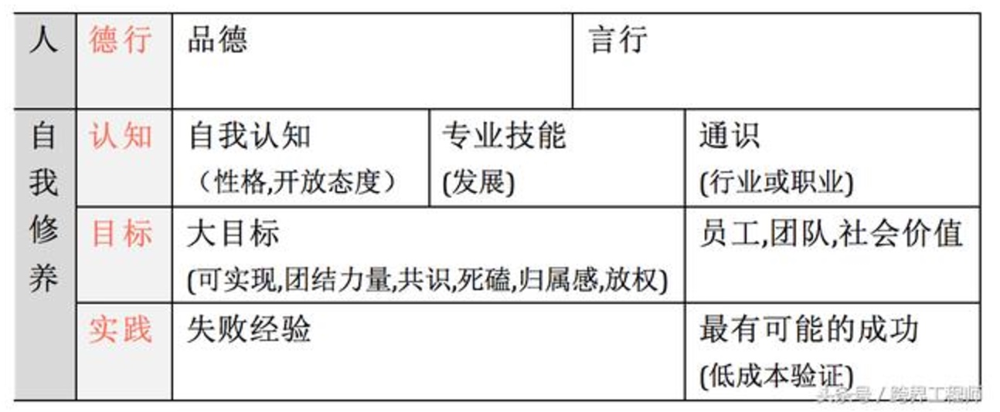
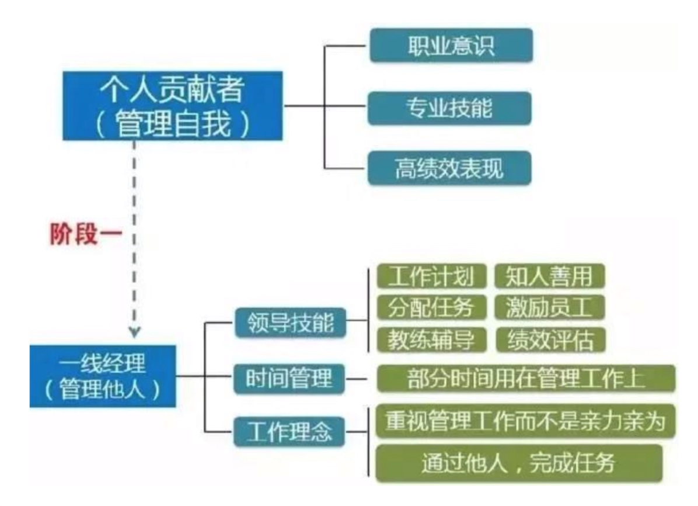
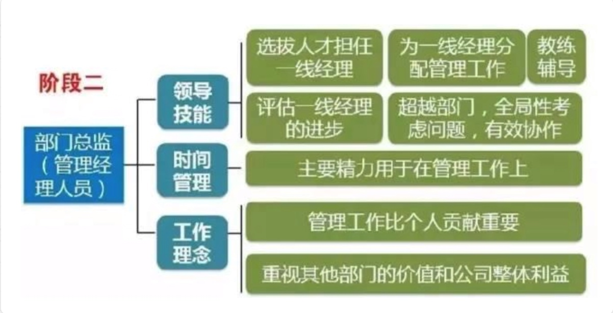
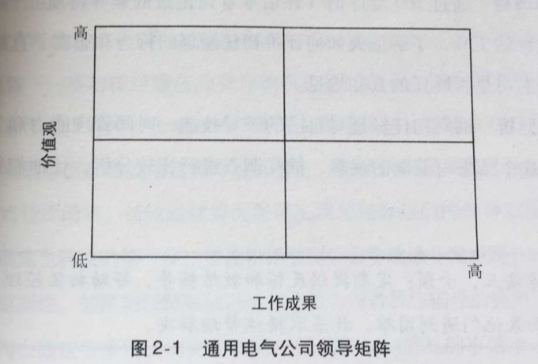

欢迎大家参加管理学习小组，如我们之前所说，这个小组是一个开放的，自愿自发的组织，希望大家学得深入，聊得尽兴，玩得开心。为了达到这个目的，我们重申一下几个基本原则：
- 自愿参与，但参与了就要认真。
- 所谓认真就是读书要联系实际工作，讨论要积极贡献，会后要有所行动。
- 管理观的形成和统一是一个过程，思考和讨论的过程比结果更重要。
我们第1期活动将定于 3月25日（下周六） 14:00-18:00，公司三层恒山会议室
请大家提前阅读《领导梯队-全面打造领导力驱动型公司》的第1-3章，同时请思考以下问题：
- 什么是管理者，在我们公司，什么人应该放到M序列。
- 一线经理和部门总监的行为特征有什么。
- 一线经理和部门总监容易犯哪些错误。
- 如何实现从个人贡献者到一线经理的转变，如何实现一线经理到部门总监的转变。
- 如何帮助你的下属实现这个转变。
大家也要提出自己的思考和问题，请于3月23日（周四）前发送至邮箱 lif@youyuan.com. 我们将整理大家的问题，并在活动中讨论。
最后请大家提前安排好时间，迟到的，没有提前准备的，讨论不积极的，会后罚酒3杯！

1. 什么是管理者，在我们公司，什么人应该放到M序列。
管理者(managers)通过别人来完成工作。他们做出决策、分配资源、指导别人的活动从而实现工作目标。
管理者是这样的人，他通过协调其他人的活动达到与别人一起或者通过别人实现组织目标的目的。
管理者是借力，充分运用他人的聪明才智和有限的资源为整个组织服务，从而实现组织目标。
首先，管理者又是领导者，一些天生具有领袖气质的人适合担当管理者。比如机灵、合群、具有威信等。
其次，熟悉业务的人适合担当管理者。比如从营销、技术等一线成长起来的人，他们对业务熟悉，是所谓的内行人，由他们担任管理者，不会出现外行管内行的现象。
第三，管理者必须是一个善于学习的人。并不是你要把所有的岗位都经历一遍之后，才会成为管理者。当你成为管理者的时候或之前，就必须成为一个“全面”的人，这就要求你必须善于学习你不熟悉但又必须熟悉的领域的知识。
第四，管理者还必须是一个勤奋的人。管理者一般要考虑通盘，所以他所花费在如何有效运作组织的时间上就会比其他人多很多，因此，管理者也是最累的人。你必须要勤奋，不怕吃苦，还需要有奉献精神，才能达到岗位所要求达到的目标。
- 具备较强的学习能力
- 爱护公司，与公司成为一体的人
- 能做出正确的价值判断
- 能担任公司经营重任的人
2. 一线经理和部门总监的行为特征有什么。
一线经理

他们的工作成果不再是通过自己亲自去获得，而是通过下属和团队的努力去获得。
必须停止考虑自己，把精力放在关注他人和团队上。
部门总监

这第二阶段，许多人会产生一个误区：管理他人和管理经理人员之间几乎没有差别。但其实部门总监与一线经理在领导技能、时间管理能力和工作理念方面有着重要的区别，如果没有实现这个阶段的领导力转型，总监们只是敷衍了事，将给公司带来严重损失。
部门总监负责的是公司中人员最集中的部门，完成绝大部分的生产性任务，其结果直接与公司的产品和服务紧密相连。可以想象，部门总监如果不能胜任自己的岗位，工作质量和工作效率将会受到多大影响！事实上，他们的工作很大程度上决定着公司的执行力和竞争优势。
3. 一线经理和部门总监容易犯哪些错误。
一线经理
在第一阶段，一线经理的转型会遇到各种挑战：
- 忽略与直接下属的沟通重要性；
- 不愿意花时间去倾听下属的意见；
- 还是按照以往的工作套路去完成任务；
- 更多的时候是直接帮助下属完成工作，事必亲躬，而不是辅导下属如何去做。
无法提高下属的胜任力是一线经理在转型时遇到的关键挑战，这主要体现在4个方面：
- 把下属提出的问题当成是障碍；
- 补救下属工作失误，而非教会如何正确去完成挑战性工作；
- 拒绝与下属分享成功，逃避对下属的问题和失败；
- 没有给予足够的支持和建立员工的文化价值观。
部门总监
- 授权问题
- 绩效管理问题
- 团队建设问题
- 仅仅是完成任务的思维模式
- 选拔『自己人』
4. 如何实现从个人贡献者到一线经理的转变，如何实现一线经理到部门总监的转变。
如何实现从个人贡献者到一线经理的转变：
必须停止考虑自己，把精力放在关注他人和团队上
- 界面和布置工作 包括与上司、员工沟通，需要他们做什么，以及工作计划、组织结构、人员选拔和工作授权。
- 提升下属的胜任能力 指导、反馈、获取资源、解决问题和沟通交流，提高下属的胜任能力，从而高效开展工作
- 建立人际关系 建立与下属、上司和相关部门坦率交流与相互信任的合作关系
如何实现从一线经理到部门总监的转变
- 选拔和培养有能力的一线经理
- 让一线经理对管理工作负责
- 在各部门配置各种资源
- 有效协调自己的直接下属部门和其他相关部门的工作
5. 如何帮助你的下属实现这个转变。
一线经理
准备 让初任经理清楚地知道新岗位的要求，包括领导技能、时间管理能力和工作理念，并未他们实现转型提供必要的培训。
监督 确认出人经理在转变中是否遇到了困难，困难是什么
- 观察
- 抽样调查 360评估
- 差距分析
干预 定期提供反馈和教练辅导，帮助初任经理实现转型。如果他们遇到困难，就采取措施帮助解决。
- 教练辅导与反馈
- 想同事学习，增强合作
- 会议、读书和旅行
- 工作调整
部门总监
如何帮助部门总监实现领导力转型？
让部门总监意识到管理员工和管理经理人员的区别，必须有适合的目标和标准：
- 工作效率提高的程度
- 工作质量提高的幅度
- 教练辅导的频率和效果
- 提升和为其他部门输送一线经理的人数
- 工作中的团队合作
- 新领域的团队合作
- 新任一线经理的成功率
明确所有标准中，最重要的是培养一线经理；
总监必须有全局的战略，并将高层战略向下属传达、解释、帮助下属理解，同时将基层员工的执行能力反馈给战略制定者。